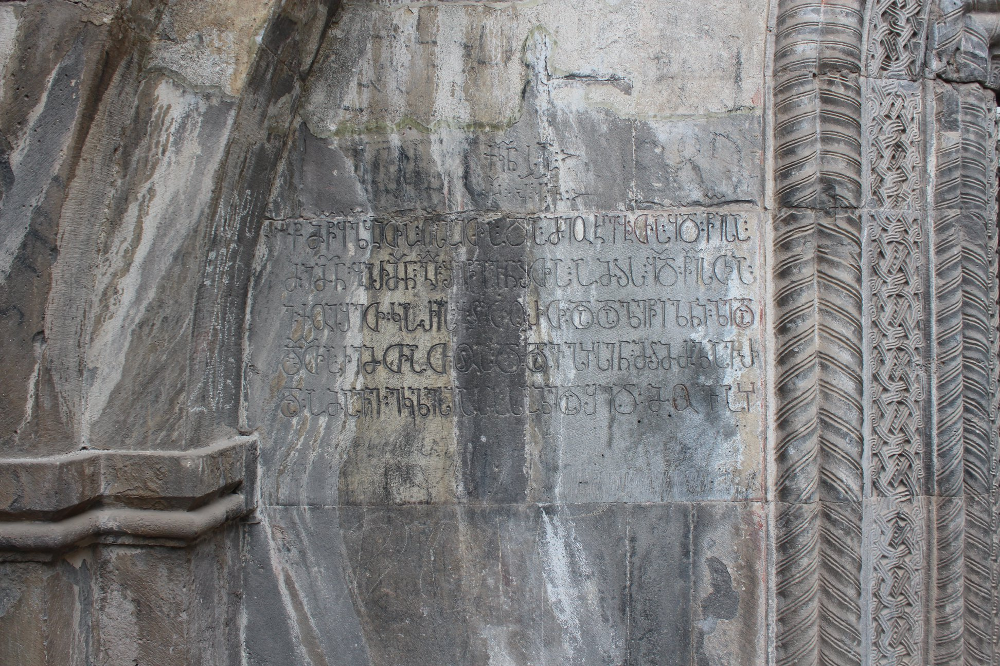

ქობაირის მონასტრის შანშე I-ის ძის, ბერი გიორგის, წარწერა (I)
შინაარსი / Summary
მოსახსენებელი Memorial
კრიტიკული გამოცემა Interpretive Edition
ქ(ორონი)კ(ო)ნსა
ხყჟვ
† მ(ო)წყ(ა)ლ(ე)ბითა ღ(მრთი)საითა და მეოხებჲთა ყ(ოვლა)დ წ(მიდ)ისა შ(ა)შ(ია)ნ(ი)სა ღ(მრთ)ისმშ(ო)ბელისაჲთა მე შ(ა)ჰ(ა)ნშ(ა)ს მ(ა)ნდატ(უ)რთუხუცესისა
ძემ(ა)ნ ბერმ(ა)ნ გ(იორგ)ი შეწევნჲთა ამჲს ყ(ოვლა)დ წ(მიდ)ის(ა)თა დიდსა იწროებ(ა)სა შ(ინ)ა ჟ(ა)მთ(ა)სა დავფიქლე ეკლესიაჲ ეს -
5ე ქოეშეთ კარის ბჭითო(ჳ)რთ და დალეწილნი ზედაით ქვის(ა)გ(ა)ნ მევე შევჰკზმენ ს(ა)ჴსრად ჩემდა მწ(ა)რეთა ცო -
დვ(ა)თა ჩემთათო(ჳ)ჲს და დავჰჴსენ მჲმძლავრებით წანაღები ზუარი რატისეული მეზურჲთა
და ამასვე ეკლესიასა საზედაშედ მოვაჴსენე უცხო თესლთ(ა)გ(ა)ნ წან(ა)ღები
დიპლომატიური გამოცემა Diplomatic Edition
ႵႩႬႱႠ
ႾႷႯႥ
† ႫႼႷႪႡႨႧႠ ႶႱႠႨႧႠ ႣႠ ႫႤႭႾႤႡჂႧႠ ႷႣ ႼႨႱႠ ႸႸႬႱႠ ႶႨႱႫႸႡႤႪႨႱႠჂႧႠ ႫႤ ႸჀႬႸႱ ႫႬႣႠႲႰႧႳႾႳႺႤႱႨႱႠ
ႻႤႫႬ ႡႤႰႫႬ ႢႨ ႸႤႼႤႥႬჂႧႠ ႠႫჂႱ ႷႣ ႼႨႱႧႠ ႣႨႣႱႠ ႨႼႰႭႤႡႱႠ ႸႠ ႯႫႧႱႠ ႣႠႥႴႨႵႪႤ ႤႩႪႤႱႨႠჂ ႤႱ
5Ⴄ ႵႭႤႸႤႧ ႩႠႰႨႱ ႡႽႨႧႭႰႧ ႣႠ ႣႠႪႤႼႨႪႬႨ ႦႤႣႠႨႧ ႵႥႨႱႢႬ ႫႤႥႤ ႸႤႥჀႩႦႫႤႬ ႱჄႱႰႠႣ ႹႤႫႣႠ ႫႼႰႤႧႠ ႺႭ
ႣႥႧႠ ႹႤႫႧႠႧႭჂႱ ႣႠ ႣႠႥჀჄႱႤႬ ႫჂႫႻႪႠႥႰႤႡႨႧ ႼႠႬႠႶႤႡႨ ႦႳႠႰႨ ႰႠႲႨႱႤႳႪႨ ႫႤႦႳႰჂႧႠ
ႣႠ ႠႫႠႱႥႤ ႤႩႪႤႱႨႠႱႠ ႱႠႦႤႣႠႸႤႣ ႫႭႥႠჄႱႤႬႤ ႳႺႾႭ ႧႤႱႪႧႢႬ ႼႠႬႶႤႡႨ

ქობაირის მონასტრის შანშე I-ის ძის, ბერი გიორგის, წარწერა
{'ka': 'ქორონიკონსა 6896, † ღმრთის მოწყალებით და ყოვლადწმინდა შაშიანის ღვთისმშობლის მეოხებით, მე, შაჰანშა მანდატურთუხუცესის\n ძემ, ბერმა გიორგიმ, ამ ყოვლაწმინდას შეწევნით, დიდი გაჭირვების ჟამს დავფიქლე ეს ეკლესია\n ქვემოდან კარის ბჭითურთ და დალეწილნი ზედა ქვებისაგან მე თვითონვე შევკაზმე ჩემი მწარე ცოდვების სახსრად.\n დავიხსენი მიმძლავრებით წაღებული ვენახი რატისეული მეზურით\n და ამავე ეკლესიას საზედაშედ მოვაჴსენე უცხო თესლთაგან წანაღები. †'}
<div type="edition" xml:lang="ka" ana="mtavruli" xml:space="preserve">
<ab>
<lb n="1"/><w lemma="ქრისტე"><expan><abbr>ქ</abbr><ex>რისტ</ex><abbr>ე</abbr></expan></w>
<w lemma="განსუენება"><expan><abbr>გა</abbr><ex>ნ</ex><abbr>ო</abbr><ex>ჳ</ex><abbr>ს</abbr><ex>უ</ex><abbr>ენე</abbr></expan></w>
<w lemma="სულ">სოჳ<lb n="2" break="no"/>ლსა</w>
<name nymRef="ვაჩა">ვაჩაჲს<lb n="3" break="no"/>ასა</name>
<name nymRef="გურა"><expan><abbr>გო</abbr><ex>ჳ</ex><abbr>რაჲ<lb n="4" break="no"/>სასა</abbr></expan></name>
<name nymRef="მირა"><expan><abbr>მ</abbr><ex>ი</ex><abbr>რა</abbr><ex>ჲ</ex><abbr>ს</abbr><ex>ა</ex><abbr>ს</abbr><ex>ა</ex></expan></name>
</ab>
</div>